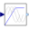
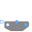
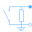
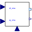

UtilitiesUtilities for quasi-static fundamental wave machines |
|
Package Contents
|  |
Voltage-Frequency-Controller |
|  |
Terminal box Y/D-connection |
|
Terminal box Y/D-connection |
|
|  |
Rheostat which is shortened after a given time |
|  |
Current controller |
|
Y-D-switch |